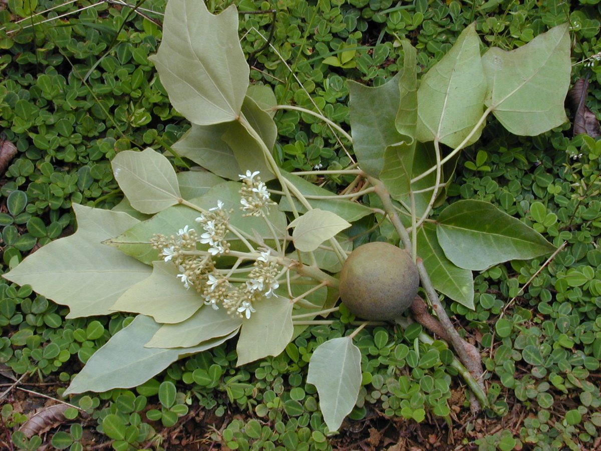
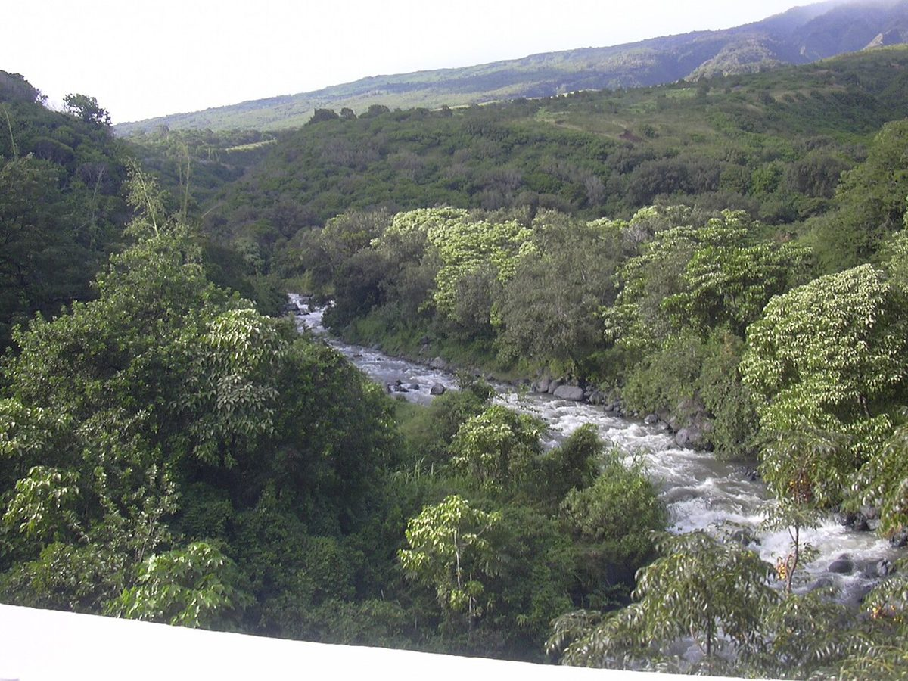
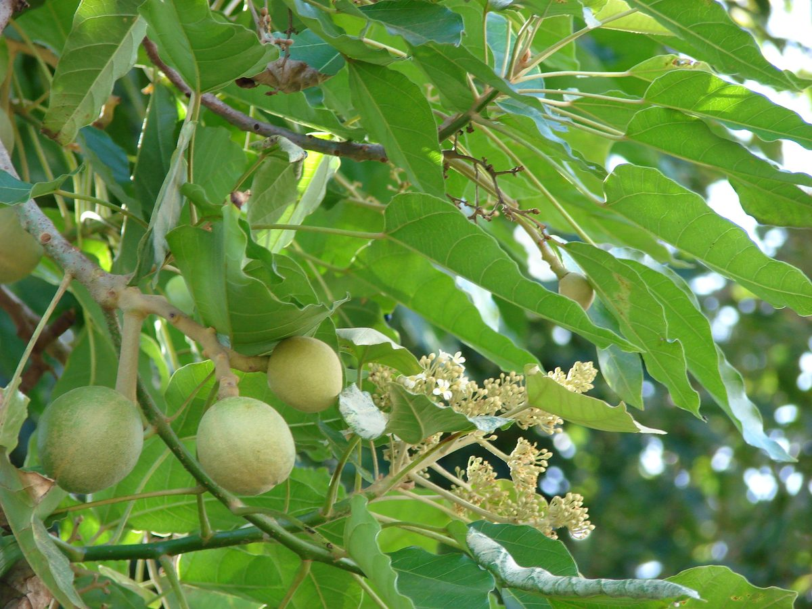

NOTABLE Valley mouth Riparian
Aleurites moluccanus
kukui · candlenut, Indian walnut



Quick facts
| Family | Euphorbiaceae |
|---|---|
| Scientific name | Aleurites moluccanus |
| Hawaiian name(s) | kukui |
| English name(s) | candlenut, Indian walnut |
| Status | Polynesian introduction (canoe plant) |
| Conservation | — |
| Coastal zones | Valley mouth Riparian |
| Occurrence | Forms bright silvery-green groves at the mouths of Nā Pali valleys — Kalalau, Hanakoa, Hanakāpīʻai — often the most conspicuous tree from offshore. Marks Polynesian settlement zones along the entire island. |
Hazards: Raw kukui nuts are strongly laxative and mildly toxic if eaten in quantity. Traditional food use requires careful processing.
How to identify
- Growth form
- A medium tree, 10–20 m tall, with a broad, dense canopy and stout spreading branches.
- Size
- 10–20 m tall.
- Leaves
- Highly variable within a single tree — palmately 3–5 lobed on young growth (like a maple leaf), plain ovate on mature growth — 10–20 cm long, distinctly pale silvery-green above and covered in short star-shaped hairs on the new growth, so the whole canopy appears silvery from distance.
- Flowers
- Small (~1 cm), white, five-petaled, in loose branched clusters at the branch tips; individual flowers unshowy but collectively conspicuous.
- Fruit / seed
- A green globular drupe 4–6 cm across, becoming black at maturity, containing 1–2 hard round nuts. Nuts are oil-rich.
- Bark / stem
- Smooth pale grey to greenish-grey, becoming shallowly furrowed.
- Where it sits on the coast
- Valley mouths, along stream corridors up into the lower valleys. Absent from the salt-spray strand.
Clinchers (features that lock the ID)
- Silvery-green canopy visible from distance — the diagnostic remote-view feature on Nā Pali.
- Palmately lobed young leaves (5-fingered) on the same tree as ovate mature leaves.
- Star-shaped hairs on new leaves and flower clusters (hand lens).
- Round green-to-black drupe with a hard oil-rich nut inside.
Look-alikes
- Morinda citrifolia (noni) — Also a valley-mouth tree with large glossy leaves, but noni leaves are simple, entire, and glossy dark green (not lobed, not silvery), and the fruit is a lumpy multiple fruit — very distinct.
- Ricinus communis (castor) — Has similarly lobed leaves but is a smaller shrub (2–4 m), leaves larger and glabrous, with a distinctive prickly seed capsule; also castor is invasive and highly toxic.
Ecology
Polynesian settlers carried kukui from island to island as a multipurpose plant; it has since naturalized to the point of forming persistent groves at valley mouths and is included in native vegetation reconstructions. [1], [2], [3], [9], [10]
Cultural significance
Kukui is the official tree of the State of Hawaiʻi. The nuts, bark, and light-giving oil have been used for many purposes across Hawaiian history; that living tradition is not detailed further in this guide.